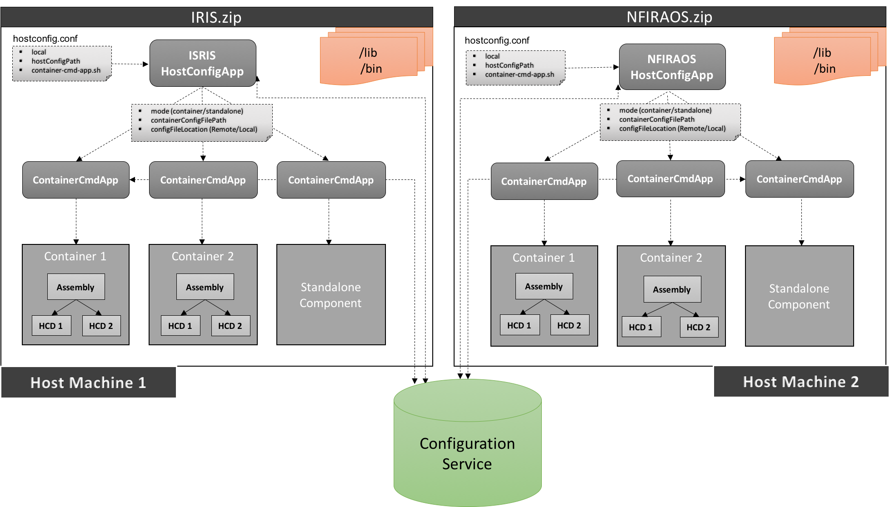

csw-host-config
This is just a helper to create host configuration application. Every component/subsystem is expected to create their own host configuration application using this helper, to be more precise every github repository should have one host configuration application. Reason for having one app per repo is, when you run universal:publish task, it will generate zip which will be self contained (will have all the required dependencies) and can be deployed independently on any machine.
This application will start multiple containers on a given host machine and each container will have single/multiple components.
How to create
- Scala
-
import csw.apps.hostconfig.HostConfig object TromboneHostConfigApp extends App { HostConfig.start("Trombone-Host-Config-App", args) } - Java
-
import csw.framework.javadsl.JHostConfig; public class JTromboneHostConfigApp { public static void main(String args[]) { JHostConfig.start("JTrombone-Host-Config-App", args); } }
Command line parameter options
--localIt’s an optional parameter. When supplied, get the host configuration file from local machine located at hostConfigPath, else fetch it from config service<file>It’s mandatory parameter. It specifies Host configuration file path-s, --container-script <script-path>It specifies the path of generated shell script of container command app from taskuniversal:publish(sbt-native-packager task)--helpPrints the help of the application.--versionPrints the version of the application.
Examples
Example: ./trombone-host-config-app hostConfig.conf -s ./trombone-container-cmd-app
Explanation: Fetch hostconfig.conf from configuration service which contains multiple container configuration, then invoke trombone-container-cmd-app script per container configuration which spawns container
Example: ./trombone-host-config-app --local hostConfig.conf -s ./trombone-container-cmd-app
Explanation: Fetch and parse hostconfig.conf from current directory which contains multiple container configuration, then invoke trombone-container-cmd-app script per container configuration which spawns container
Where does it fit in overall deployment strategy (may change)

Custom Host Configuration
- hostconfig.conf
-
# This is a host configuration file which contains list of containers to be spawned by host configuration app containers: [ { # mode can be one of Container or Standalone mode: "Container" # path of individual container configuration file configFilePath: "/Users/pritamkadam/TMT/csw-prod/csw-vslice/src/main/resources/assemblyContainer.conf" # provide 'Remote' if file needs to fetched from config service else # provide 'Local' to fetch file from local machine configFileLocation: "Local" }, { mode: "Standalone" configFilePath: "/Users/pritamkadam/TMT/csw-prod/csw-vslice/src/main/resources/hcdStandalone.conf" configFileLocation: "Local" } ]
Help
Use the following command to get help on the options available with this app
./bin/trombone-host-config-app --help
Version
Use the following command to get version information for this app
./bin/trombone-host-config-app --version
Systemd configuration
Using systemd, you can configure host configuration application to spawn containers on a machine to be run automatically on system startup.
For detailed information on systemd configuration, please refer readme.md